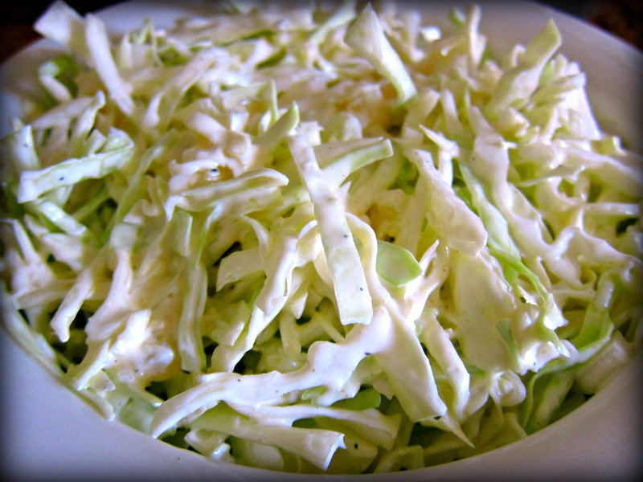

Coleslaw

coleslaw by erik forsberg, licensed under CC BY 2.0
Description
A delicous, traditional coleslaw recipe by Nagi from recipetineats. You should visit her page for more details and tips.
Ingredients
- 7 cups green cabbage, finely shredded
- 1 medium carrot, shredded
- 1/2 cup mayonnaise
- 1/2 cup sour cream or yoghurt
- 1 1/2 tbsp apple cider vinegar
- 2 tsp Dijon mustard
- 2 tbsp white sugar
- 3/4 tsp celery salt
- 1/4 tsp black pepper
Steps
- To make the dressing, mix everything except for the cabbage and carrots together.
- Toss the cabbage, carrots, and dressing made in the previous step all together. Set aside for at least 20min.
- Toss well before serving.